Посетите древние пирамиды Мероэ:
Исследуйте увлекательные нубийские пирамиды, которые являются объектом Всемирного наследия ЮНЕСКО.
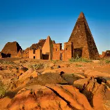
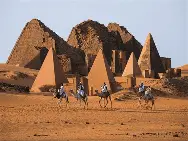

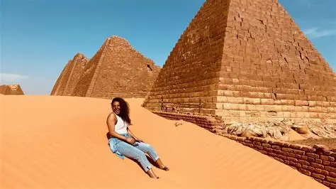
Откройте для себя Джебель Баркаль:
Эта священная гора является домом для древних храмов и важным археологическим объектом.

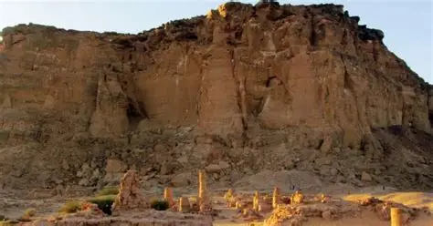
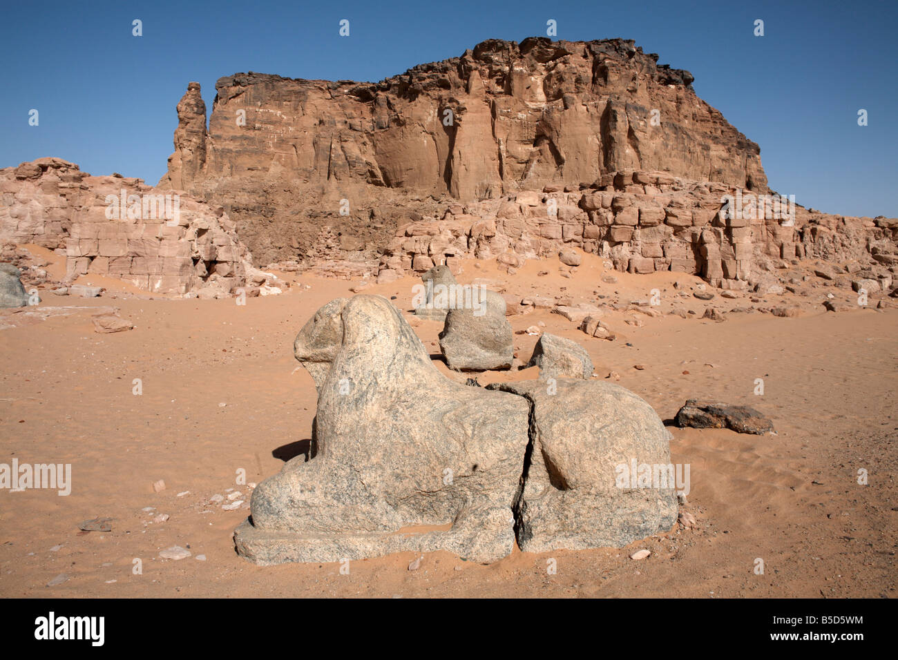
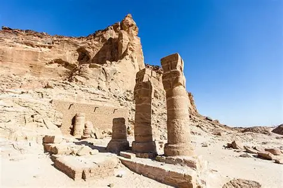
Почувствуйте атмосферу реки Нил:
Насладитесь потрясающими пейзажами вдоль Нила, где можно совершить прогулки на лодке и отдохнуть.
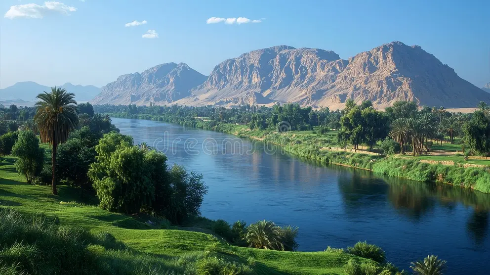
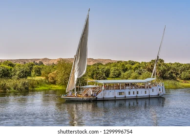
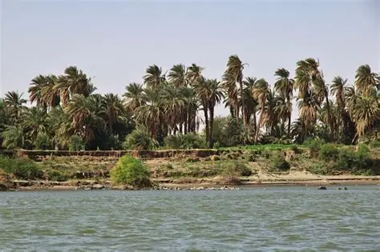
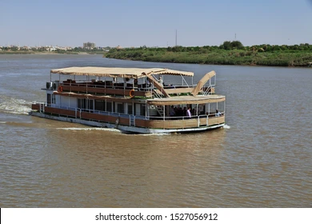
Исследуйте Оммдурман:
Погрузитесь в местную культуру, посещая рынки и ощущая живую атмосферу города.

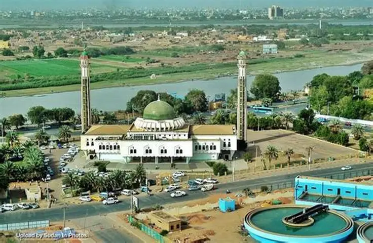
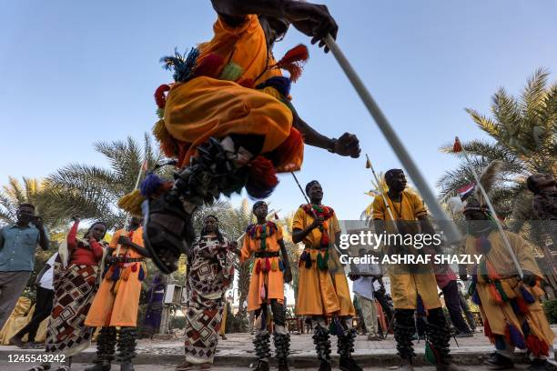
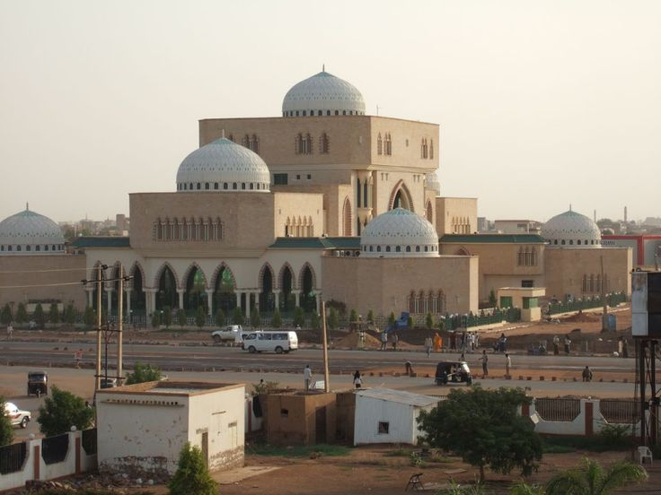
Отдых на побережье Красного моря:
Посетите Порт-Судан и остров Суакін для красивых пляжей и возможностей для дайвинга.
Эти мероприятия демонстрируют богатую историю и природную красоту Судана, делая его уникальным направлением для путешествий.

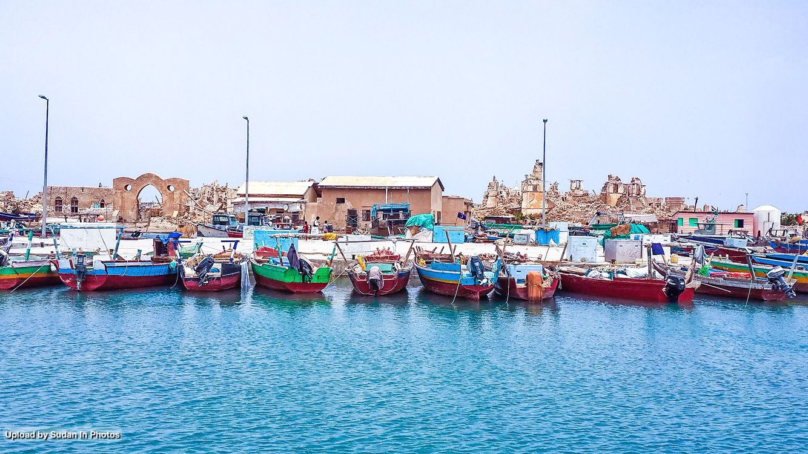

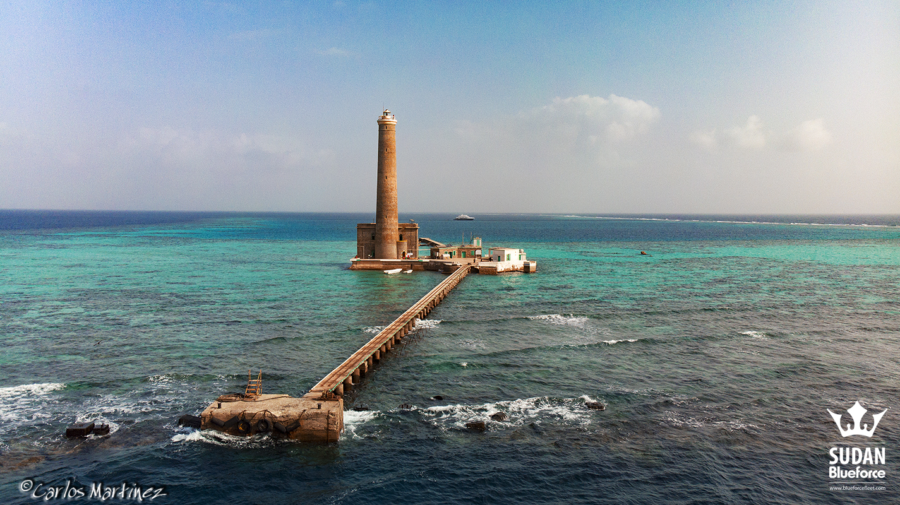